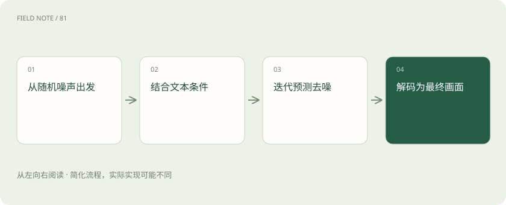

先读哪些知识
先用一个类比理解
像逐渐擦掉雾气让轮廓显现，但每一步都由学到的规律引导。
类比只帮助建立直觉，不等同于技术的完整机制。
一图看懂

概念边界
典型扩散生成先学习如何从带噪表示预测去噪方向，生成时逐步把随机状态变成图像。潜空间扩散在压缩表示中进行主要运算，再解码到像素；这与语言模型逐词元生成的路径不同。
内部怎样运作
文本条件引导画面内容，采样步骤、引导强度和随机种子影响结果，但不同实现参数含义未必相同。图像编辑还可加入掩码、结构或参考图条件，约束越多也不保证每处细节都被保持。
把机制放进具体场景
生成维修海报时，模型可能画出逼真的设备，却把按钮标签拼错。添加参考图或局部掩码可以约束结构，但最终仍要核对文字、接口位置和安全标识；清晰度提高并不会自动修复这些语义错误。
取舍与容易忽略的限制
生成条件越复杂，冲突也可能越多。文本要求改变背景，而参考图要求保持整体结构时，模型需要在约束间折中；局部编辑的边界附近还可能产生不连续。随机种子便于控制某些重复试验条件，却不能保证跨版本完全重现。评估时应分别看画质、指令遵循、结构保持和文字准确性。
放进真实场景
SCENARIO
想把设备海报背景换成厂房，又要求铭牌完全不变，应重点检查铭牌区域是否被重绘。视觉上相似不能替代逐字核对型号与额定参数。
别踩这个误区
画面逼真不能证明事件真实，清楚的文字和精确数量也可能生成错误。
想一想
扩散模型是否像语言模型一样逐字画出图片？
典型扩散并非逐字生成，它迭代更新带噪图像或潜在表示。
关联阅读
资料与边界
本文为原创知识讲解。类比和图示经过简化；示例数字不代表实测或报价。整理日期：2026-11-04。文末列出对应技术的原始资料，具体功能与版本支持请以原文为准。